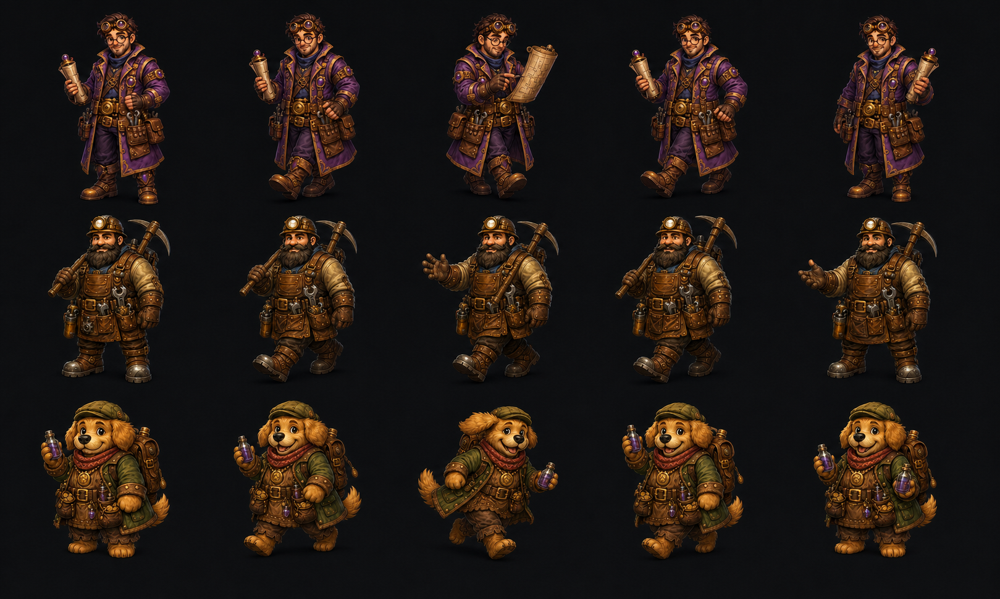
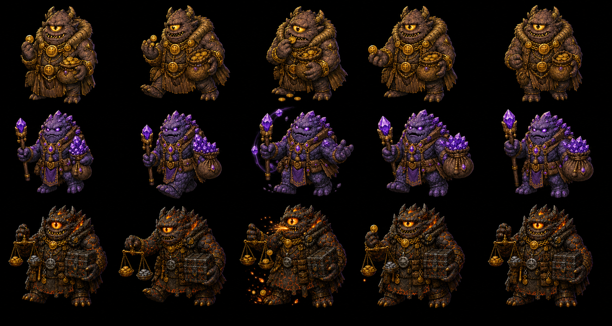

Character walk board

POST-WIRING REVIEW · V4
The profession activities and anchored pacing are already live. This review explores full leg, torso, and prop cycles for the next art pass.
Gold line = authored shop anchor · blue band = maximum safe pacing area

